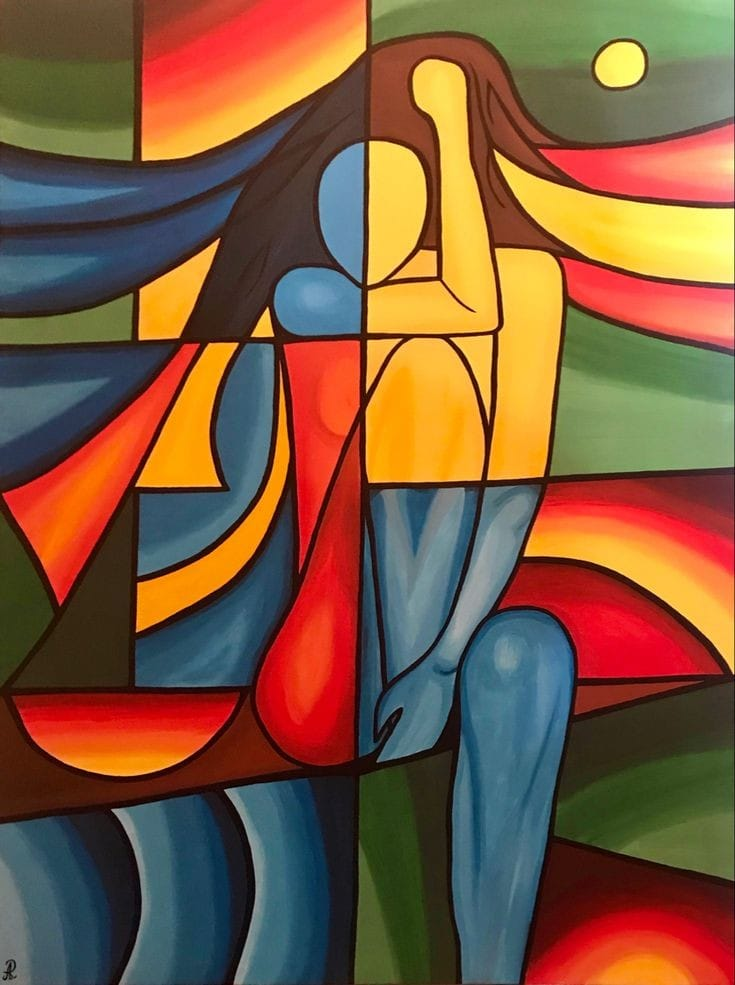

Dibujo Abstracto
El dibujo abstracto es una forma de expresión artística que se aleja de la representación literal de objetos o escenas del mundo real. En lugar de centrarse en la reproducción fiel de la realidad, el arte abstracto explora formas, colores, líneas y texturas para evocar emociones, ideas o conceptos más allá de lo visible. Este estilo permite al artista jugar con la percepción del espectador, creando obras que pueden interpretarse de múltiples maneras según las experiencias y emociones personales de quien las observa.
El dibujo abstracto, en su esencia, es un reflejo de la subjetividad humana. Cada línea, color y forma es una manifestación de la percepción y la emoción del artista, y al mismo tiempo, una invitación para que el espectador proyecte sus propias experiencias y sentimientos sobre la obra. De esta manera, el arte abstracto no solo comunica lo que el artista siente, sino que también permite a los demás encontrar su propio significado en la abstracción. Es un espacio donde las reglas tradicionales del arte se disuelven, dando paso a una forma de expresión más personal, intuitiva y, en muchos casos, profundamente conmovedora.
